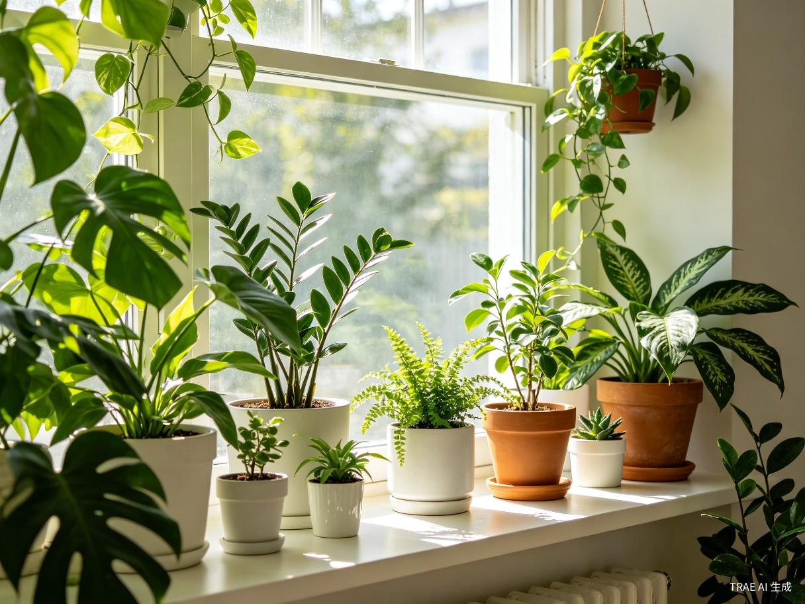

光照是植物生长最关键的因素之一。很多新手养死植物，不是因为浇水太多，而是因为把植物放错了位置。一株喜欢散射光的植物被放在烈日下暴晒，或者一株喜光的植物被塞在阴暗角落，结果可想而知。
本指南将带你全面了解室内光照环境，学会判断不同位置的光照强度，为每一种植物找到最合适的家。
一、光的四种类型
室内光照环境通常分为四种类型，每一种适合不同的植物。了解这些分类，是科学摆放植物的基础。
直射光 直接阳光照射
定义：阳光直接透过窗户照射到植物叶片上，通常持续数小时。南向窗户是直射光的主要来源，尤其在中午到下午时段光线最强。
特征：光照强度最高，夏季温度上升快，叶片容易被灼伤。距离窗户越近，直射光越强。
适合植物：仙人掌、多肉植物、虎刺梅、玉树、芦荟、沙漠玫瑰等原产于干旱地区的植物。这些植物天生适应强光环境。
注意：即使是喜光植物，炎热的夏季午后也需要适当遮阴，避免叶片灼伤。可以在窗户上贴一层半透明窗膜来缓冲强光。
散射光 明亮但不直射
定义：光线充足明亮，但阳光不直接照在植物上。通常是离窗户1-3米范围内的位置，或者有窗帘遮挡的窗户旁。
特征：这是大多数室内植物最理想的光照环境。光线充足但柔和，不用担心灼伤叶片。
适合植物：龟背竹、绿萝、琴叶榕、橡皮树、竹芋、白掌、兰花、网纹草等大多数常见室内观叶植物。可以说，80%的室内植物都喜欢散射光。
如果你不确定植物该放哪里，"明亮的散射光环境"是最稳妥的选择。把植物放在距离东向或南向窗户1-2米的地方，通常就是理想的散射光位置。
半阴 中等偏弱光线
定义：光线明显偏暗，可以正常阅读但不够明亮。通常是远离窗户3米以上的区域，或北向窗户旁的位置。
特征：光照偏弱，植物生长速度会减慢。叶片颜色可能变深以吸收更多光线。
适合植物：虎皮兰、富贵竹、一叶兰、椒草、万年青、袖珍椰子等耐阴性好的植物。这些植物在半阴环境下虽然生长慢，但依然健康。
暗光 光线昏暗
定义：几乎没有自然光，主要依赖室内照明。如走廊深处、没有窗户的卫生间、远离任何窗户的角落。
特征：光照严重不足。绝大多数植物在此环境下无法长期存活。但少数极其耐阴的植物可以忍受。
适合植物：虎皮兰（最耐阴）、银皇后、铁线蕨、绿萝（勉强存活）。需要注意，几乎没有植物能在完全黑暗的环境中生长，最低限度也需要一些散射光或人工补光。
如果你的房间确实没有自然光，可以考虑使用LED植物补光灯。每天开启8-12小时，很多植物就能在无窗房间中正常生长。
二、窗户朝向对照表
同一株植物放在不同朝向的窗户旁，生长状态可能天差地别。下面的表格帮你快速判断每个朝向窗户的光照特点。
| 窗户朝向 | 光照类型 | 光照强度 | 日照时长 | 适合植物举例 | 注意事项 |
|---|---|---|---|---|---|
| 南向 | 直射光为主 | 最强 | 全天（6-10小时） | 仙人掌、多肉、沙漠玫瑰、虎刺梅、龙舌兰 | 夏天午后需遮阴，防止叶片灼伤 |
| 东向 | 散射光（上午） | 柔和适中 | 上午（3-5小时） | 绿萝、竹芋、兰花、白掌、大多数观叶植物 | 最理想的植物养护朝向，清晨阳光温和不伤叶 |
| 西向 | 散射光+直射光（下午） | 较强偏热 | 下午（4-6小时） | 虎皮兰、发财树、琴叶榕、橡皮树、鸭脚木 | 下午阳光强烈且温度高，喜湿润植物需远离 |
| 北向 | 半阴/暗光 | 最弱 | 几乎无直射光 | 蕨类植物、万年青、白掌、银皇后、虎皮兰 | 光照严重不足，仅适合极度耐阴植物 |
| 东南向 | 散射光+部分直射 | 中等偏强 | 上午至中午（5-7小时） | 龟背竹、绿萝、吊兰、网纹草、椒草 | 综合了南向和东向的优点，适配性强 |
| 西南向 | 直射光为主（午后） | 强且持久 | 中午至傍晚（6-8小时） | 多肉、仙人掌、沙漠植物 | 光照强烈，常规观叶植物不建议放此处 |
如果你家是东向窗户，恭喜你——这是最适合养植物的朝向之一。清晨柔和的光线不会伤叶，光线充足程度也刚好满足大多数室内植物的需求。南向窗户光照虽强但需加防护，北向窗户则最好只放耐阴植物。
三、判断光照的简单方法：手影法
你不需要专业的测光仪。一个简单实用的方法就能帮你判断任何位置的光照强度——手影法。
操作方法：在你想放置植物的位置，将手放在植物预计摆放的高度（大约叶片所在位置），观察手掌下方的阴影轮廓。
清晰锐利的黑影
阴影边缘非常清晰，说明这是直射光环境。适合仙人掌、多肉等喜光植物。
模糊但有轮廓的阴影
阴影边缘模糊但仍能看到手的轮廓，说明这是明亮的散射光。适合绝大多数室内植物。
仅有隐约的灰影
只能看到非常模糊的影子，没有明显轮廓，说明这是半阴环境。适合耐阴植物。
几乎看不到阴影
手下方几乎看不出阴影变化，说明这是暗光环境。只有极少数植物能在此存活。
使用建议：在不同时间点（上午、中午、下午）分别测试同一个位置，因为光照强度在一天中会不断变化。综合判断后再决定是否适合摆放植物。
手影法不仅简单实用，而且非常直观。建议在晴朗天气的中午进行测试，此时最能反映该位置的光照上限。如果中午也只有模糊阴影，说明这个位置光线偏弱。
四、植物摆放原则
了解了光照分类和判断方法后，接下来是在实际家居环境中的摆放策略。遵循以下原则，让每一株植物都待在最适合它的位置。
- 原则一：按需分配，喜光靠窗，耐阴靠内 最喜光的植物放在离南向窗户最近的位置（0-1米）；喜欢散射光的放在窗边1-3米范围；耐阴植物可以放在远离窗户的室内深处。
- 原则二：避免频繁移动 植物需要时间适应环境。找到合适的位置后就尽量固定，频繁搬动会让植物反复适应新环境，影响生长。一般建议最多每季度调整一次位置。
- 原则三：注意季节变化 夏天太阳高度角高、光照强烈，喜散射光的植物需要适当远离窗户；冬天太阳高度角低、光照减弱，可以把植物向窗户方向移动一些。在南北方不同纬度，同一朝向的光照强度也有差异。
- 原则四：定期旋转花盆 植物有向光性，叶片会朝向光源方向生长。每隔1-2周将花盆旋转90度，可以让植株长得更加均匀对称，避免"歪脖子"现象。
- 原则五：善用窗饰调节光线 如果家里只有南向或西向强光窗户，可以使用半透明纱帘或百叶窗来柔化光线，将直射光转化为散射光。这能大大扩展你的植物选择范围。
- 原则六：观察植物的反馈 植物是最好的"光照检测仪"。如果叶片出现黄斑或干枯边缘，可能是光照过强；如果茎节变长（徒长）、叶片变小变黄，通常是光照不足。及时根据植物的状态调整摆放位置。
掌握了以上四部分内容，你已经可以自信地为各种室内植物选择最佳位置了。记住一个简单的口诀："强光喜阳靠边站，散射光柔往里挪，耐阴植物随便放，手影方法常测试。"
养植物是一门需要观察和调整的学问。随着季节变化和你对植物的了解加深，你会越来越擅长为它们找到最舒服的"家"。